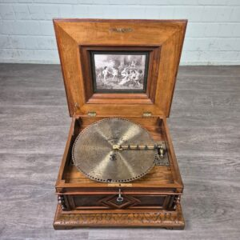
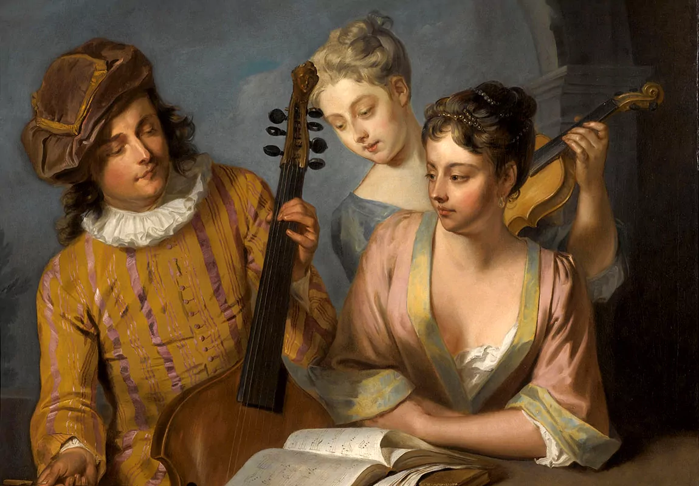
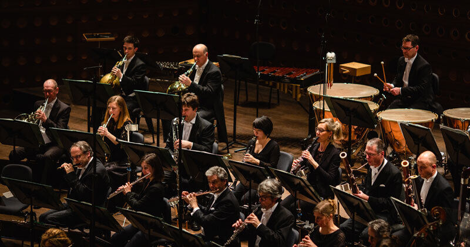
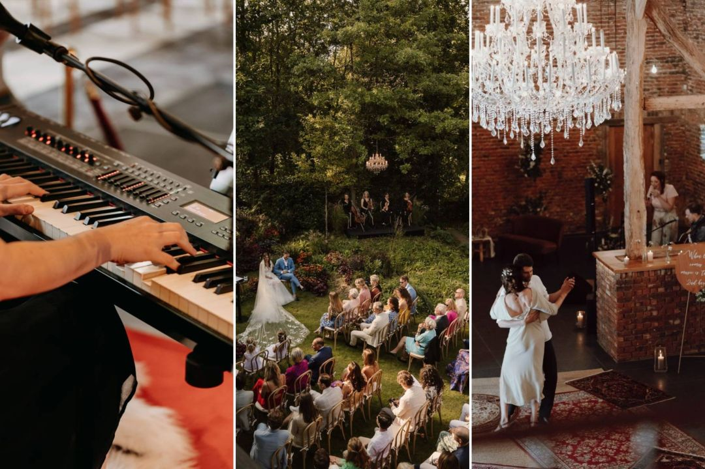
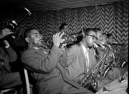
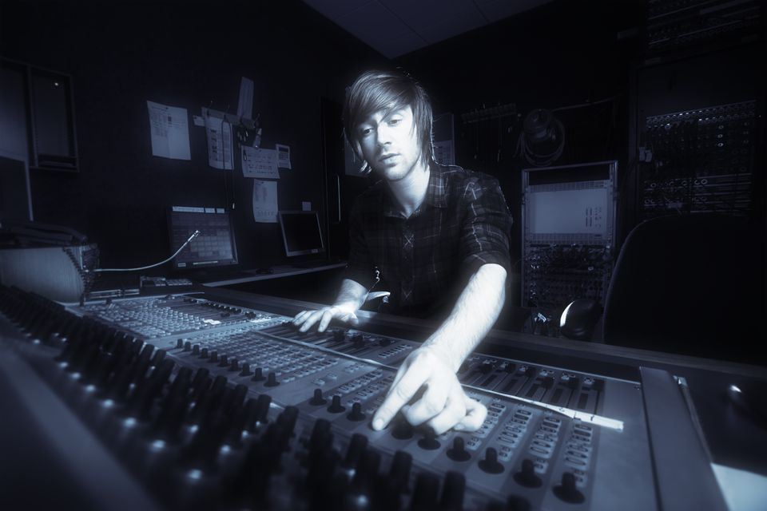

>500 N.C.
Oorsprong Muziek

Muziek begon als een utilitaire vorm, vaak verbonden met rituelen en ceremonies in oude samenlevingen.
500 N.C.
Antieke Muziek
In de oude beschavingen, zoals die van de Grieken en Romeinen, werd muziek gebruikt voor religieuze en sociale evenementen.
500-1400
Middeleeuwse Muziek

De ontwikkeling van het notenschrift in de middeleeuwen (500-1400) maakte het mogelijk om muziek vast te leggen en te verspreiden.
1400-1600
rennaissence

Deze periode zag de opkomst van polyfonie, waarbij meerdere stemmen gelijktijdig werden gezongen, wat leidde tot complexere composities.
1600-1750
De Barokperiode
Van 1600 tot 1750 introduceerde deze periode nieuwe vormen zoals de sonate en suite, en muziek werd steeds meer een kunstvorm.
1750-1820
Klassieke Periode
Van 1750 tot 1820 werd muziek gestructureerder met componisten zoals Mozart en Beethoven die de symfonie en sonate verder ontwikkelden.
19de eeuw
Romantiek
In de 19e eeuw kwam er een focus op emotie en individualiteit, met componisten zoals Chopin en Wagner die nieuwe expressieve stijlen introduceerden.
vroege 20ste eeuw
Jazz
In de vroege 20e eeuw ontstond jazz, een genre dat improvisatie en ritmische complexiteit benadrukte, met invloed van Afro-Amerikaanse muziek.
1950
Rock'n Roll

In de jaren 1950 veranderde rock 'n' roll de muziekscene, met iconen zoals Elvis Presley die de populaire muziek vormgaven.
1990
Digitale Revolutie
Vanaf de jaren 1990 en verder heeft technologie de manier waarop muziek wordt gemaakt, verspreid en beluisterd drastisch veranderd, met de opkomst van genres zoals elektronische muziek en hiphop.